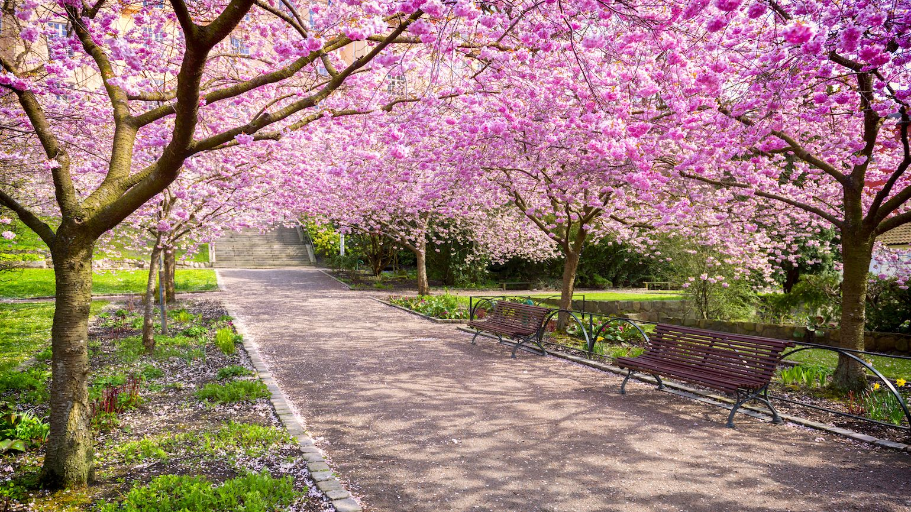
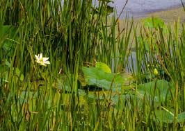
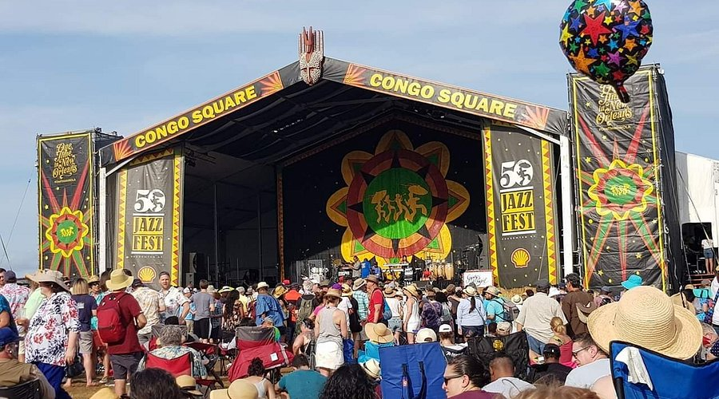
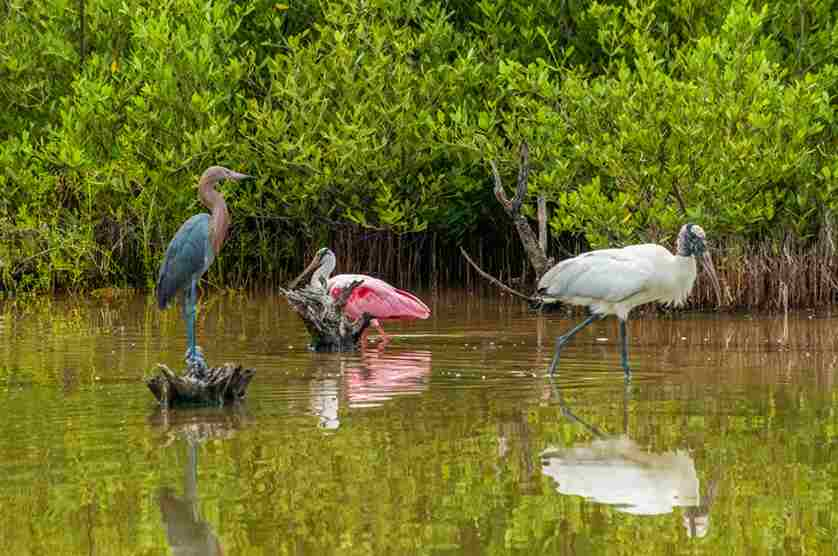
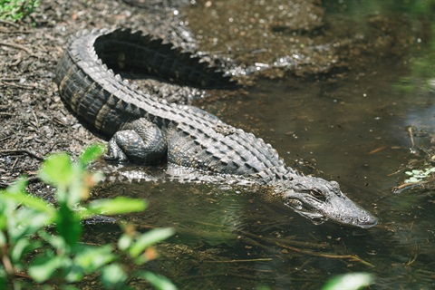
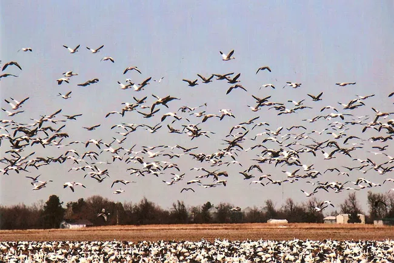
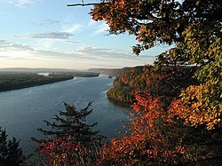
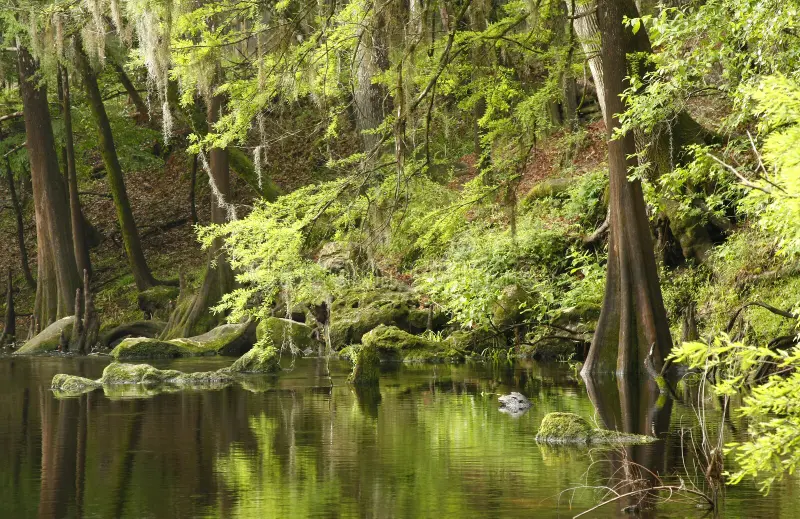
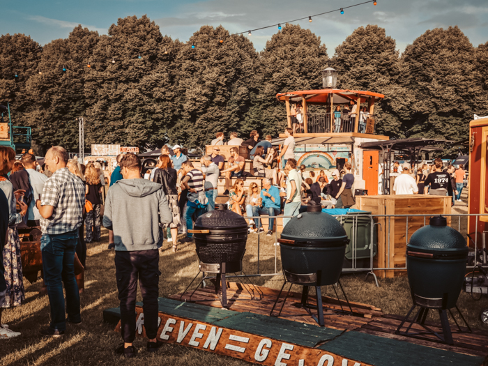
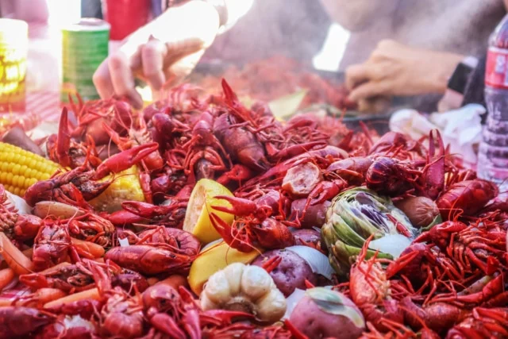

When to Visit
Spring, from March through May, is the best time to visit the Mississippi Delta. The weather is warm and pleasant, wildflowers bloom across the wetlands, and migratory birds fill the skies. It is the perfect season to explore the bayous by boat, stroll through New Orleans' historic neighborhoods, and enjoy open-air festivals without the intense summer heat.

Wildflowers blooming along the bayou in early spring.Autumn is a great second option, with cooler temperatures and fewer crowds. If you love jazz and local culture, plan your trip around the New Orleans Jazz and Heritage Festival in late April and early May, one of the most celebrated music events in the world.

The New Orleans Jazz & Heritage Festival draws visitors from around the world.
Wildlife You Will Not Forget

American alligators are a common sight in the cypress swamps.The Mississippi Delta is one of the most spectacular places in North America to experience wildlife up close. Over 400 species call this region home, from American alligators gliding through the cypress swamps to roseate spoonbills wading in the shallow marshes. Whether you are a keen birdwatcher or simply someone who loves nature, the delta will leave you speechless.

Millions of migratory birds pass through the Mississippi Flyway each season.The delta sits along the Mississippi Flyway, one of the great bird migration routes of the continent. Every spring and autumn, millions of birds pass through, making it a dream destination for wildlife photographers and nature lovers alike. Guided swamp tours are the easiest way to get into the heart of this extraordinary ecosystem, and experienced local guides will help you spot species you never expected to see.

A River Worth Exploring
 Sunset over the vast waterways of the Mississippi Delta.
Sunset over the vast waterways of the Mississippi Delta.
The Mississippi River stretches 3,730 kilometers from the forests of Minnesota all the way to the Gulf of Mexico, and its final stretch through Louisiana is unlike anything else on Earth. Here the river splits into a web of channels, bayous, and waterways that open up into a vast coastal landscape of marshes, barrier islands, and open water.

Ancient cypress trees draped in Spanish moss line the riverbanks.Renting a boat or joining a river cruise is one of the most memorable ways to take in the delta. You can glide past ancient cypress trees draped in Spanish moss, spot herons fishing along the banks, and watch the sun set over a horizon with no buildings in sight. For those who prefer dry land, the Great River Road is a scenic driving route that follows the Mississippi through charming riverside towns, historic plantations, and sweeping viewpoints over the river.

Eat, Drink & Discover

Fresh crawfish and oysters are staples of Creole cooking.No visit to the Mississippi Delta is complete without sitting down to a proper Creole or Cajun meal. The delta's waters produce some of the finest seafood in the world, and locals have been turning shrimp, crawfish, oysters, and blue crab into extraordinary dishes for generations. From bustling New Orleans restaurants to roadside shacks in the bayou, the food here is an experience in itself.
 The vibrant streets of the French Quarter, alive day and
night.
The vibrant streets of the French Quarter, alive day and
night.
Beyond the plate, the delta is a place of deep cultural richness. New Orleans is famous the world over for its music, its festivals, and its unique blend of French, African, and Caribbean influences. Wander through the French Quarter, catch a live jazz performance on Frenchmen Street, or explore the colorful markets and antique shops that line the old city streets. There is always something happening, and the locals are always happy to show you a good time.
Activities & Adventures

Swamp Tours
Glide through ancient cypress swamps and encounter alligators, turtles, and exotic birds up close. Guided swamp tours offer an unforgettable look into the mysterious heart of the Louisiana bayou.

Jazz & Cultural Heritage
The Mississippi Delta is the birthplace of jazz, blues, and Creole culture. Explore vibrant music festivals, historic plantations, and the rich culinary traditions of New Orleans and surrounding communities.

Airboat Rides
Race across shallow marshes and open waterways on a thrilling airboat adventure. These iconic flat-bottomed vessels are the best way to reach the remote, untouched corners of the delta ecosystem.